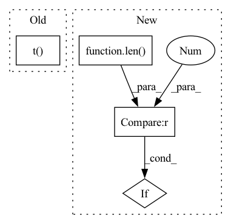

Pattern ID :37381
Before Change
if self.sequence_model:
tmp = batch_group.TEXT
label = batch_group.LABEL.t()
data = tmp[0].t()
data_seq_length = tmp[1]
seq_len = data.size(1)After Change
tmp = batch_group.TEXT
label = batch_group.LABEL
if len(label.size()) > 1 :
label = label.t()
if len(tmp) == 2:In pattern: SUPERPATTERN
Frequency: 3
Non-data size: 4
Instances Fragment ID: 107523435
Project Name: waterzxj/unf
Commit Name: 09694a5d28252c5e2327c1d695b8e7de6a965605
Time: 2020-02-22
Author: 1486459973@qq.com
File Name: UNF/training/learner.py
M Class Name: Trainer
N Class Name: Trainer
M Method Name: batch_loss(2)
N Method Name: batch_loss(2)
M Parent Class: object
N Parent Class: object
M File Name: UNF/training/learner.py
N File Name: UNF/training/learner.py
M Start Line: 340
M End Line: 373
N Start Line: 346
N End Line: 385
Before Change
// iterative updates:
for i in range(iters):
// compute distance matrix of coords and stress
dist_mat = torch.cdist(best_3d_coords.t(), best_3d_coords.t() , p=2)
stress = ( weights * (dist_mat - pre_dist_mat)**2 ).sum() / 2
// perturb - update X using the Guttman transform - sklearn-like
dist_mat[dist_mat == 0] = 1e-5After Change
if weights is None:
weights = torch.ones_like(pre_dist_mat)
// batched MDS
if len(pre_dist_mat.shape) < 3 :
pre_dist_mat.unsqueeze_(0)
// start
batch, N, _ = pre_dist_mat.shape Fragment ID: 107523436
Project Name: lucidrains/alphafold2
Commit Name: 98e16ad2931a27f90e05df940cff72c00074028d
Time: 2021-01-17
Author: ericalcaide1@gmail.com
File Name: utils.py
M Class Name: AnonimousClass
N Class Name: AnonimousClass
M Method Name: mds_torch(5)
N Method Name: mds_torch(5)
M Parent Class:
N Parent Class:
M File Name: utils.py
N File Name: utils.py
M Start Line: 174
M End Line: 205
N Start Line: 181
N End Line: 215
Before Change
code_lang_weights: torch.Tensor,
) -> Tuple[torch.Tensor, torch.Tensor]:
// basic vector product
y_pred = torch.mm(query_embeddings, code_embeddings.t() ) // B x B
// we are in the binary case
y_true = torch.diag(ground_similarity)
After Change
y_pred = cosine_similarities(query_embeddings, code_embeddings)
// we are in the binary case
// y_true = torch.diag(torch.diagonal(ground_similarity))
if len(ground_similarity.shape) == 1 :
y_true = torch.diag(ground_similarity)
else:
y_true = ground_similarity Fragment ID: 107523437
Project Name: mandubian/codenets
Commit Name: fa0b1863337116fdcc6a2692c9eeb25a0371d36a
Time: 2020-04-16
Author: p.voitot@samsung.com
File Name: codenets/losses.py
M Class Name: LambdaLossAndSimilarityScore
N Class Name: LambdaLossAndSimilarityScore
M Method Name: forward(5)
N Method Name: forward(5)
M Parent Class: LossAndSimilarityScore
N Parent Class: LossAndSimilarityScore
M File Name: codenets/losses.py
N File Name: codenets/losses.py
M Start Line: 202
M End Line: 270
N Start Line: 211
N End Line: 294